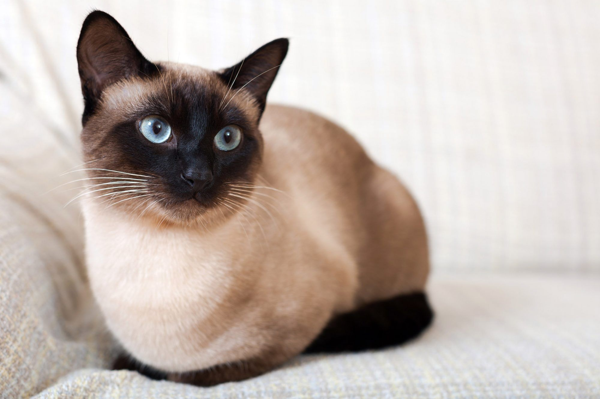
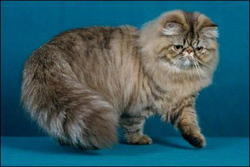
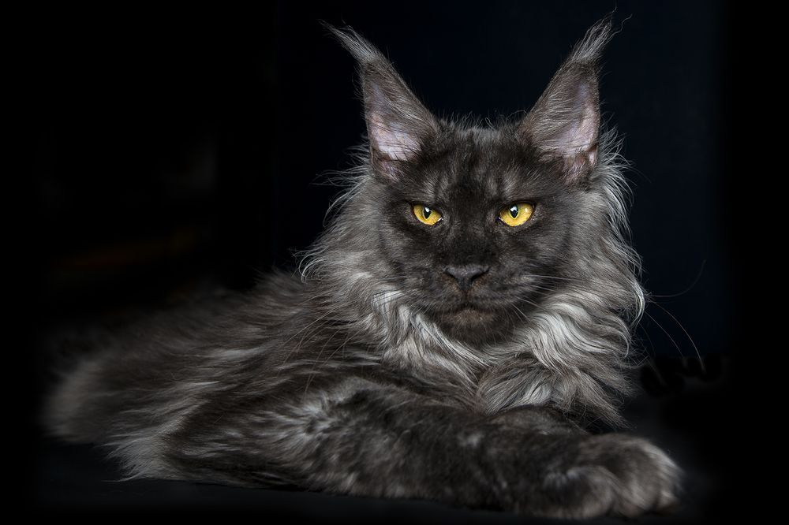

Популярные породы кошек

Сиамская кошка
Происхождение: Таиланд
Характер: Общительная, умная, разговорчивая
Сиамские кошки известны своим громким голосом и привязанностью к хозяину.

Персидская кошка
Происхождение: Иран (Персия)
Характер: Спокойная, ласковая, домосед
Требует ежедневного ухода за длинной шерстью.

Мейн-кун
Происхождение: США (штат Мэн)
Характер: Дружелюбный, игривый, крупный
Одна из самых крупных пород домашних кошек.